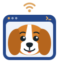
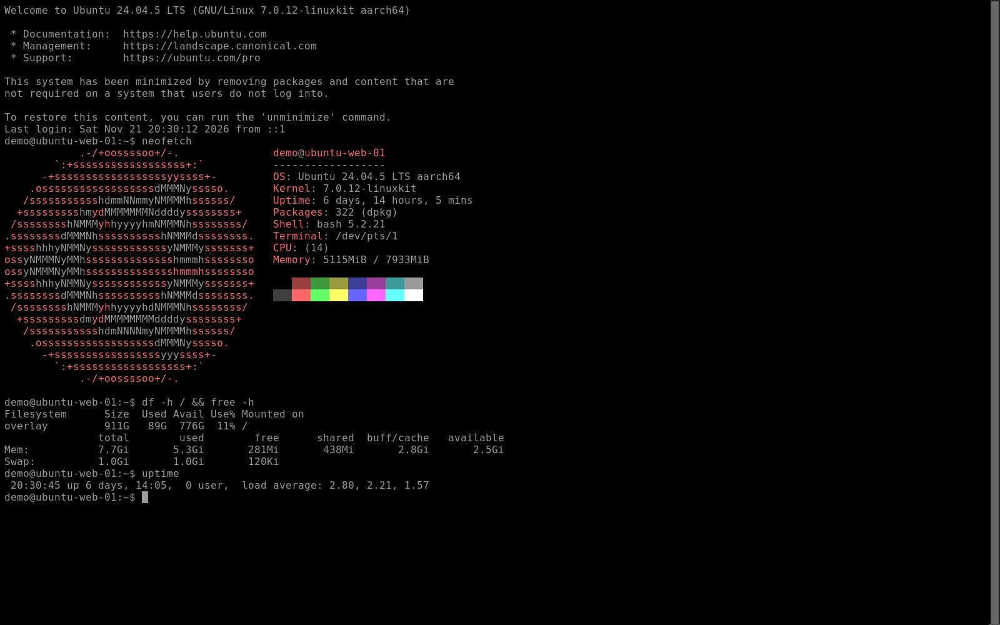
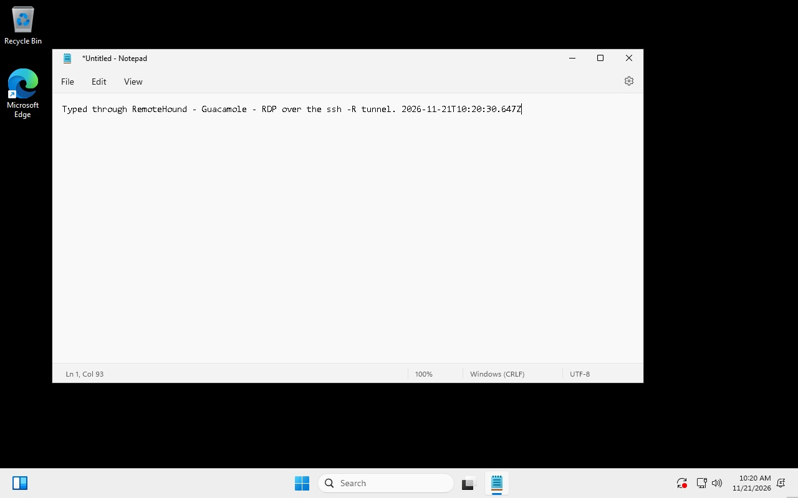
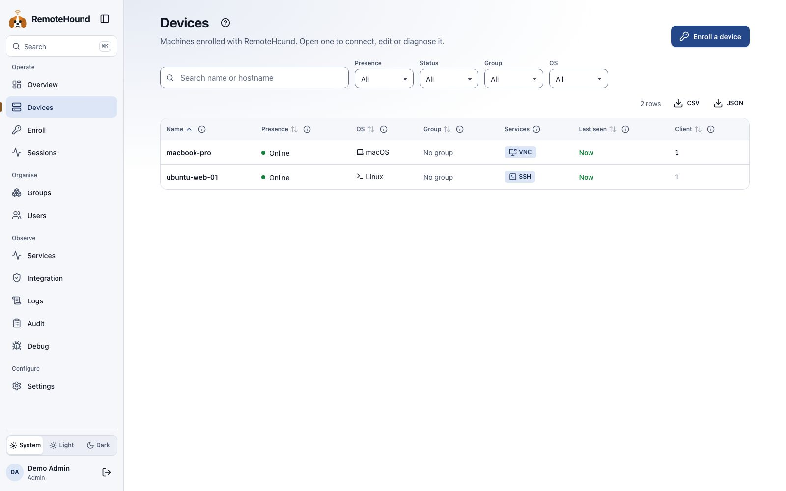
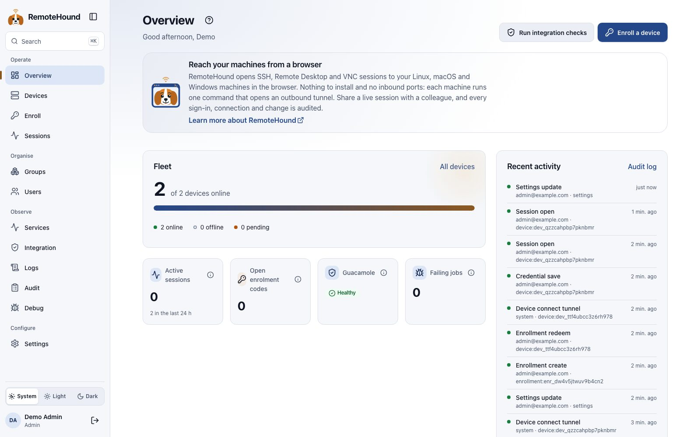
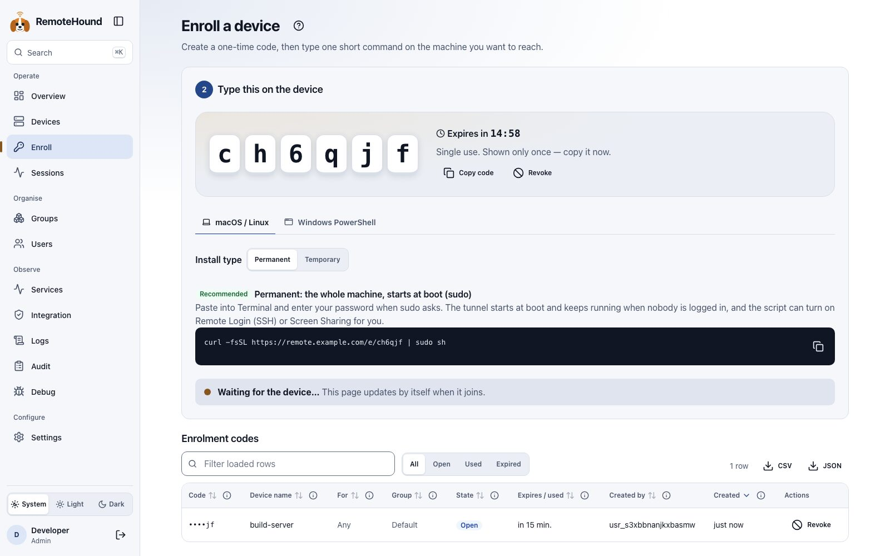
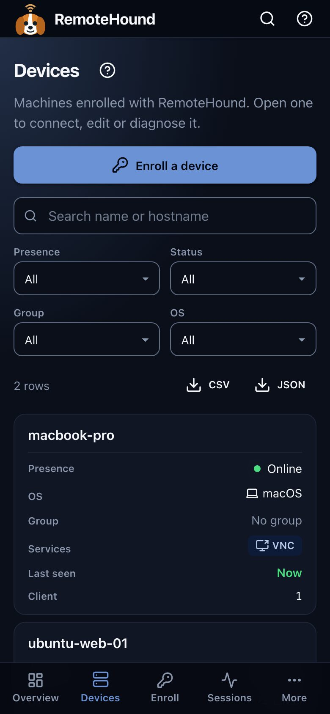

Reach your machines from a browser.
SSH, Remote Desktop and VNC to your Linux, macOS and Windows machines. Nothing to install on them, nobody to approve each session, no inbound ports.
Self-hosted: there is no shared service to sign up for. You run RemoteHound on your own server or any Docker host, and only the people you add can sign in.

How it works
A machine is set up once, by someone who can type a command on it. From then on, anyone with access in the console connects from a browser, and nobody at the other end has to approve it.
Once per machine
Set up a machine
- Create a code. In the console, choose Enroll and name the machine. You get a single-use code that expires in minutes.
- Type one command on the machine. In Terminal, or PowerShell opened with Run as administrator. No installer, no agent.
macOS / Linux curl -fsSL https://your-server/e/CODE | sudo sh Windows PowerShell (as administrator) irm https://your-server/e/CODE | iex
Device setup guide (PDF) Step by step, with screens, for the person at the Mac or Windows PC. The console prints the same guide with the code already filled in. - The machine dials out. The script gives the machine its own SSH key and opens an outbound
ssh -Rtunnel to RemoteHound with the SSH client the system already has. systemd, launchd or a Scheduled Task starts it at boot and brings it back after network drops. No admin rights? Choose Temporary on the Enroll page: the same command withoutsudo(or in an ordinary PowerShell) runs the tunnel only while you are logged in. The console shows which kind each device has. - It shows up online. The machine appears under Devices with the services it offers: SSH, Remote Desktop or Screen Sharing.
Every session
Connect from a browser
- Sign in to the console with Microsoft Entra ID, Google, GitHub or any OpenID provider, on a laptop or a phone.
- Select Connect. RemoteHound checks that you may open that machine, then gives Guacamole a sealed ticket for exactly that one connection, valid for 60 seconds.
- Guacamole opens the session over RDP, VNC or SSH, through the machine's tunnel, to the machine's own Remote Desktop, Screen Sharing or SSH server.
- Work in the tab. The screen streams to the browser; keyboard, mouse, touch and clipboard go back. Invite someone to watch or take control. Every connection is audited.
Where Apache Guacamole fits
RemoteHound decides who may open what. Guacamole does the drawing: it speaks RDP, VNC and SSH and turns them into something a browser can show. The two run together as one bundle, and only RemoteHound faces the internet.
One ticket per click
Each Connect gets a signed, encrypted ticket in Guacamole's JSON format, holding one connection for 60 seconds. Guacamole can't drift from RemoteHound's permissions.
Guacamole stays inside
Guacamole and guacd sit on an internal network with no published ports. Every browser request to them passes RemoteHound's session check first.
The tunnel only forwards
A machine's key can forward its own services and nothing else: no shell on the server, no reaching other machines' ports.
What you get
Built for someone looking after a handful of machines, or a small team looking after many.
SSH, RDP and VNC
A terminal for Linux and macOS, a full Windows desktop over Remote Desktop, and macOS Screen Sharing over VNC.
Nothing to install
No agent. The script uses the SSH client built into macOS, Linux and Windows 10 and later, plus the machine's own SSH, RDP or VNC server.
No inbound ports
The machine dials out, so it works from behind home routers and NAT. Each one has its own key, and its tunnel can only forward its own services.
Made for several people
Everyone keeps their own saved logins. Invite someone to watch or take control of a live session; admins can see and end sessions but not join them.
Checks and fixes itself
Tunnels reconnect on their own. The Services screen shows each part's health, ports and recent errors, and admins can restart them from there.
Every action recorded
Sign-ins, enrolments, connections and changes go into a tamper-evident audit log. Sign in with Microsoft Entra ID, Google, GitHub or any OpenID provider.
Security and controls
RemoteHound hands out access to computers, so the design starts from what a stolen piece could do and limits each one. Every control below is written down in the threat model and covered by tests.
Sign-in you control
Microsoft Entra ID, Google, GitHub or any OpenID provider, verified with PKCE and signed tokens, or your own sign-in proxy behind a shared secret. Sessions are signed, HttpOnly cookies with idle and absolute timeouts.
Deny by default
Admin, operator and viewer roles. Operators see only their own groups' devices; others don't exist for them. Removing someone's access ends their live sessions, and the last admin can't be removed.
A device key does one thing
Each machine makes its own ed25519 key. It can hold open only the forwards that machine declared: no shell on the server, no commands, no reaching other machines or the server's network.
One-time session tickets
Each Connect gets a sealed ticket for one connection that lives 60 seconds and works only for the person it was made for. Guacamole has no users or database of its own and can't be reached from outside.
Passwords sealed, never shown
Saved logins are encrypted with AES-256-GCM, separately for each person and device. The API never returns them, and the logs and audit trail redact them.
Tamper-evident audit
Every sign-in, enrolment, connection and change is recorded once, with who, when and from where, in an append-only log chained with SHA-256 and checked every six hours.
Hardened containers
The server runs non-root in a distroless image with a read-only filesystem and every capability dropped. Guacamole and guacd sit on an internal network with no published ports and no route to the internet.
Limits on abuse
Enrolment codes are single-use, expire in 15 minutes by default and are stored hashed; wrong guesses are rate-limited. The tunnel port caps and times out unauthenticated handshakes, and the API limits requests per address and per user.
Supply chain
One external Go module. Images pinned by digest, CI actions pinned to commits, secret scanning over the whole history, and govulncheck and Trivy on every change.
Known limits, stated openly. Whoever holds a device's key could pose as that device's services, so prefer each person's own login over a shared password. guacd's upstream image is built on an Alpine release that no longer gets updates; it runs without privileges on an internal network until a supported build exists. The full list is in the threat model. Found a problem? Report it privately.
Screenshots
Real sessions in a browser tab, each through a tunnel the machine opened itself, and the console that runs them. This is the console you get on your own server.






Run your own
RemoteHound is open source and self-hosted. Each organisation runs its own copy: your machines, your sign-in, your audit log, on a server you control. Our own console is private to our team, so the screenshots above are the way to look around.
You need
A server or any Docker host
- A Linux server, VM or cloud instance with Docker and Docker Compose. A small one is enough for a handful of machines.
- A DNS name pointing at it, with ports 80 and 443 open for the console.
- TCP port 2222 reachable by the machines you enrol, for their outbound tunnels.
- A sign-in provider: Microsoft Entra ID, Google, GitHub, any OpenID provider, or your own sign-in proxy.
About ten minutes
Start the bundle
git clone https://github.com/jchirayath/remotehound cd remotehound/deploy cp .env.example .env && chmod 600 .env docker run --rm ghcr.io/jchirayath/remotehound \ gen-secret >> .env # your domain, sign-in and first admin $EDITOR .env docker compose up -d
Then open your own address, sign in as the first admin, check that Integration is all green and enrol your first machine. The setup guide covers sign-in providers, backups and upgrades.
Why we built it
We already run MeshCentral. It's a capable, mature tool, but two things kept getting in the way.
1. Someone at the other end has to approve the session.
2. Every machine needs a full client installed.
That's right for helping someone at their own computer: they should see and agree to it. It's a poor fit for reaching our own machines — a Windows VM that's only on when needed, a server, a laptop left at home — where nobody is sitting there to click Allow, and installing and updating an agent everywhere is one more thing to maintain.
So RemoteHound uses what the machines already have: the built-in SSH client to open the tunnel, and their own SSH, Remote Desktop or Screen Sharing server for the session. Consent is given once, by whoever runs the command on the machine. After that, people with access in the console can connect without anyone at the other end, and every connection is audited.
Sessions open in the browser through Apache Guacamole, so a full desktop works from any device, a phone included, with nothing installed on either end.
| RemoteHound | MeshCentral | |
|---|---|---|
| On the machine | One command; uses the built-in SSH client | Full agent installed and kept up to date |
| Each session | No prompt; consent given once at enrolment | Someone at the machine approves (as we run it) |
| Desktop | Native RDP and VNC, rendered in the browser | Its own remote-desktop protocol through the agent |
| Several people | Personal logins, live share for view or control | Shared device groups and user rights |
| Best for | Reaching your own machines, unattended | Attended help on someone else's computer |
Both keep running. MeshCentral stays for helping people at their own computers, where approving each session is the point. RemoteHound is for machines we look after ourselves.
Links
Source code
RemoteHound on GitHub, Apache License 2.0. Issues and contributions welcome.
github.comSetup guide
Run your own server: sign-in providers, backups, upgrades and rotating secrets.
github.comDevice setup guide
A printable PDF for the person connecting a Mac or Windows PC: settings to change, the command, what they'll see.
PDFMeshCentral project
The open-source remote management tool RemoteHound sits beside.
meshcentral.com